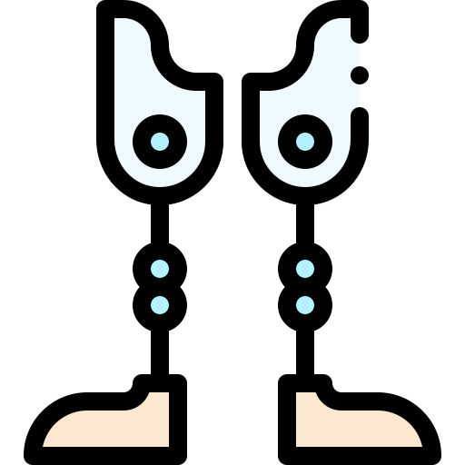

Le transhumanisme c'est cool?
Le transhumanisme est un courant de pensée qui prone la transformation et le depassement de la nature humaine grace à la technologie. Les humains ont des tares et il faut les ameliorer en modifiant le corps humain. Voici quelques exemeples plus bas de ce que l'on pourrait proposer à l'humanité


Avec les contributions de Jacques Testart, pionnier de la fécondation in vitro ... de moyens pour
modifier le monde sans prendre en compte le bien commun. ... de valeur : ne risque-t-on pas de décider par exemple que la construction d'une ... En quelques générations, le changement est spectaculaire.


Laurent Alexandre est un fervent admirateur du transhumanisme. Lors de ses apparations sur le petit ecran Il ne cesse de faire l'eloge des derives transhumanistes. Il souhaiterait prolonger sa durée de vie pour pouvoir.... lire davantage de livres....
Jacques Testart c'est le contraire de Monsieur Laurent Alexandre. Il fait preuve de critique envers le transhumanisme.
Le transhumanisme ca peut servir a quoi alors?
Le "transhumanisme a presque toujours existé" à partir du moment ou l'homme a commencé à utiliser des outils pour simplifier son quotidien, cela demarre avec l'utilisation d'une pierre ou d'un baton par les hommes prehistoriques jusqu'a l'utilisation des smartphones. La medecine réparatrice n'est pas mauvaise bien au contraire. Quelqu'un qui perd la vue ou qui perd un membre du corps doit pouvoir beneficier des decouvertes technologiques pour retrouver ses aptitudes. Le corps humain est parfaitement constitué pour la vie sur Terre, il y'a pas besoin d'utiliser des artifices nanotechnologiques pour voir plus loin sauter plus haut ou entendre plus loin, les partisans de ce genre de choses font partie des capricieux qui souhaitent vivre une vie de super heros MARVEL. En revanche dans l'espace la vie est compliqué tout est hostile à la vie organique . Le transhumanisme pourrait prendre tout son sens dans ce contexte particulierement inapproprié à la vie. L'homme augmenté a plus de pertinence sur la planete Mars que sur la planete Bleu.